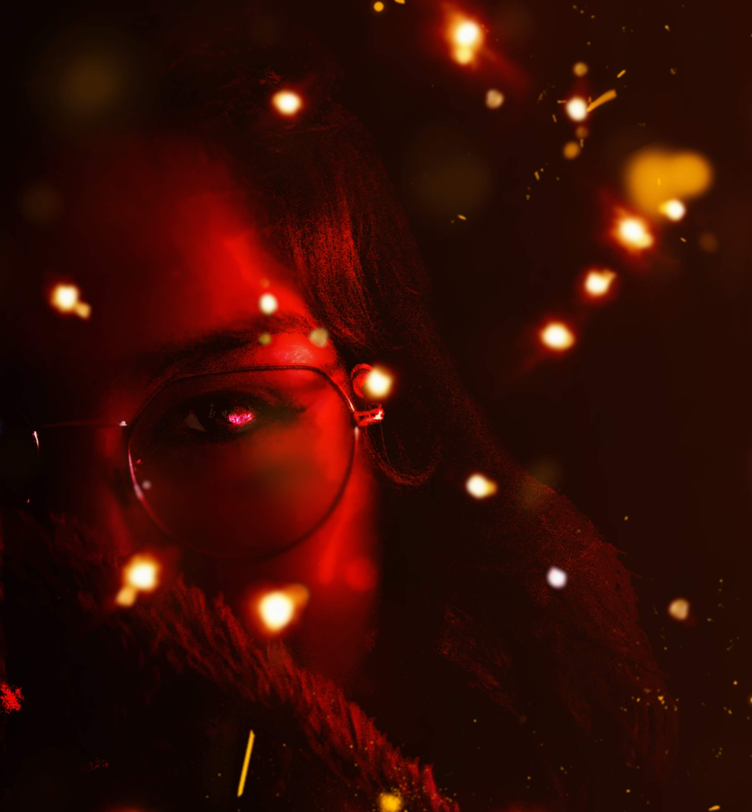
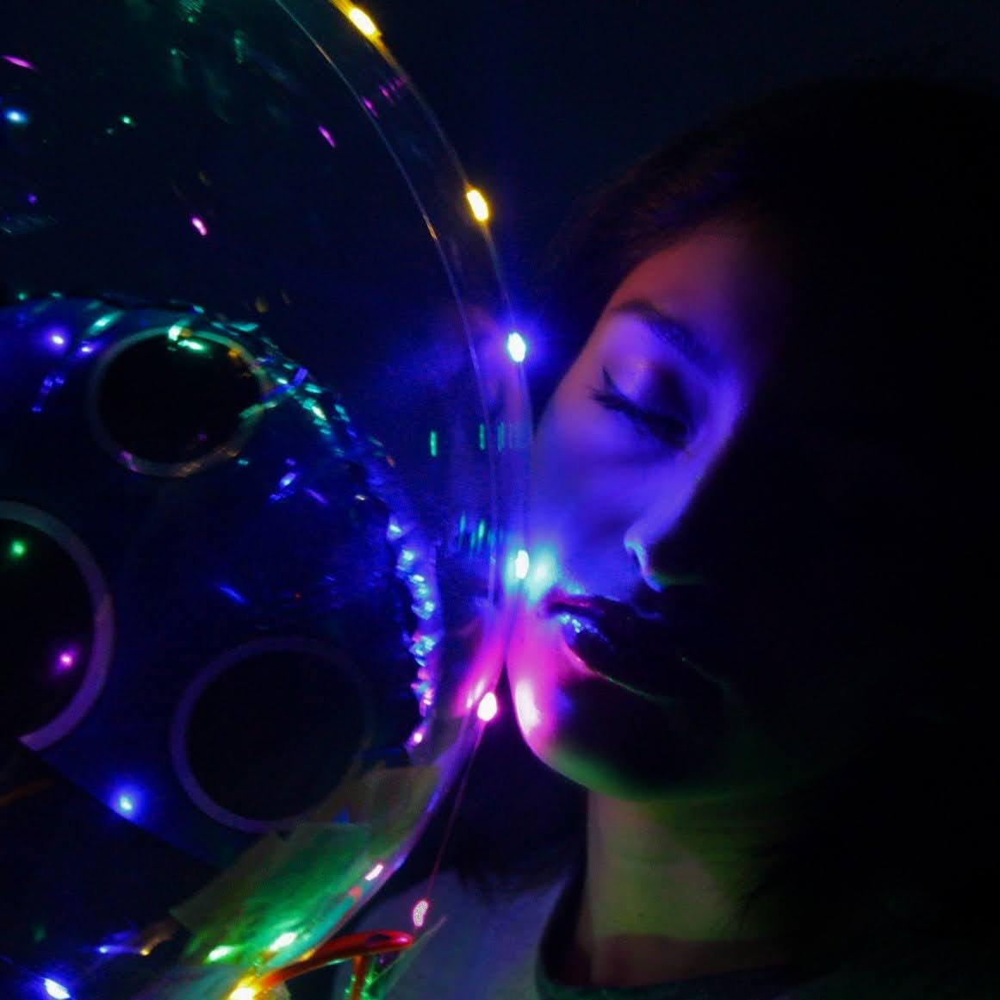
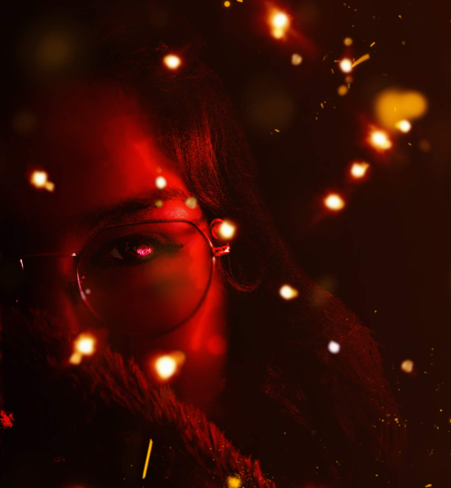
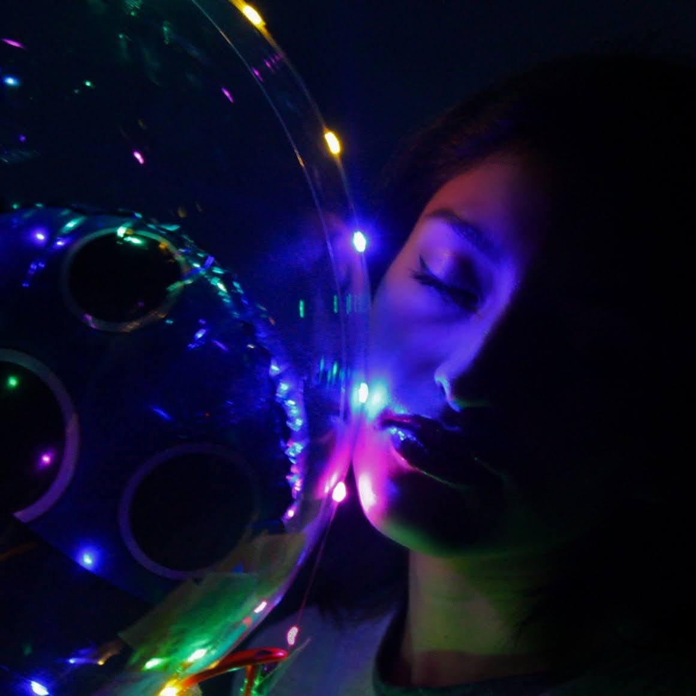
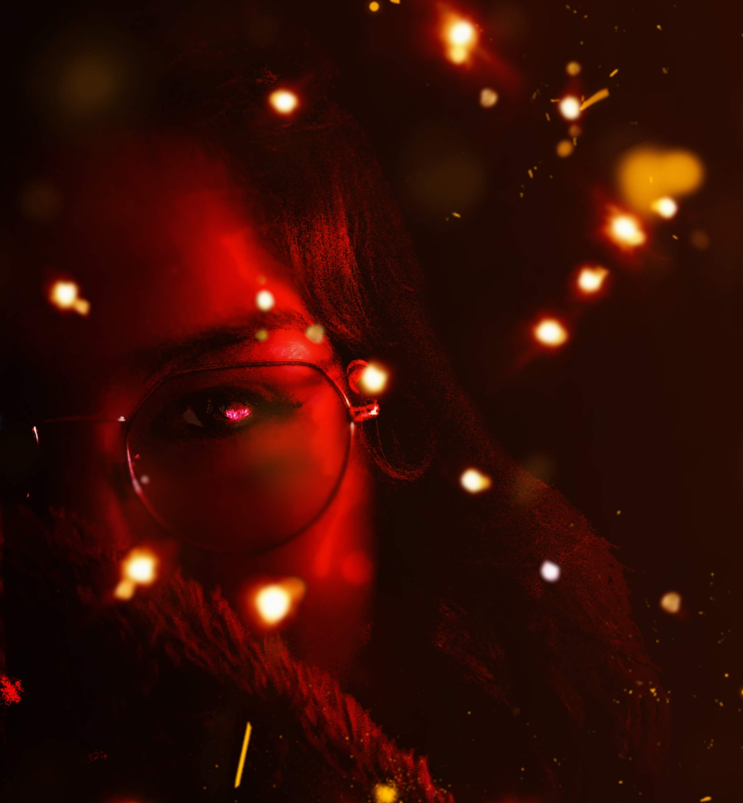
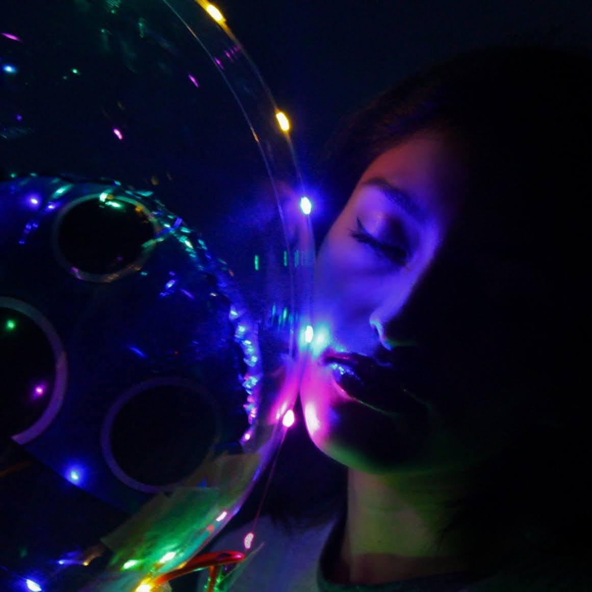

Aqui una pequeña muestra de mi trabajo
 




Empecé a hacer fotos a finales de 2019, después de un terrible año con muchos bajones emocionales, decidí despues de conocer a diversas personas en empezar en este mundo
Para empezar compre una cámara Canon T6 y fuí directo a tomarle fotos a mis amigos y a mí mismo con eso descubrí que mi tipo de fotografía favorita es el retrato.

